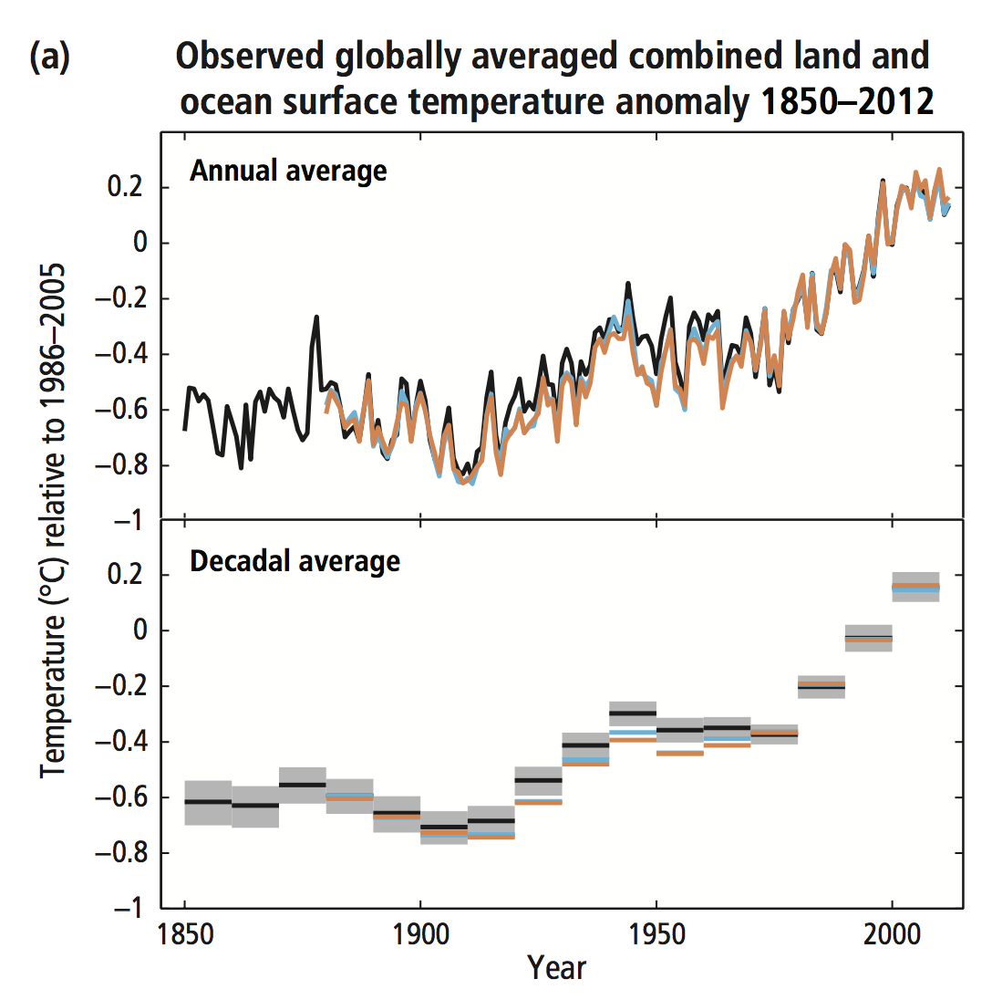
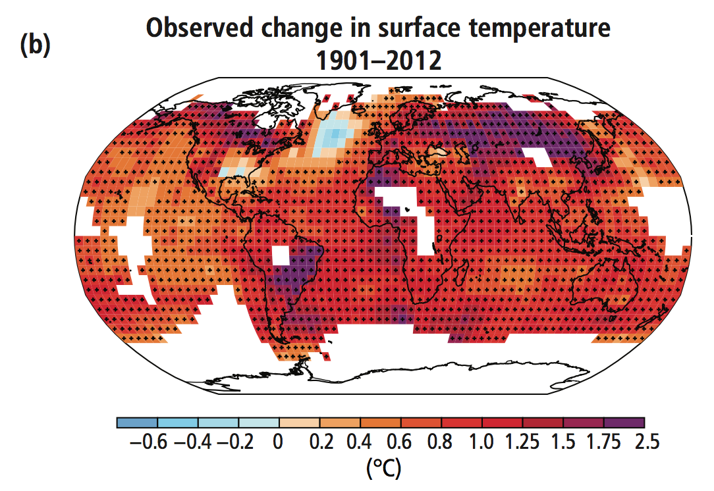
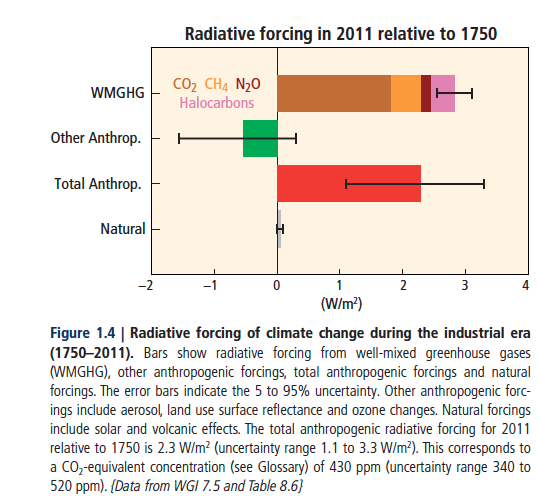
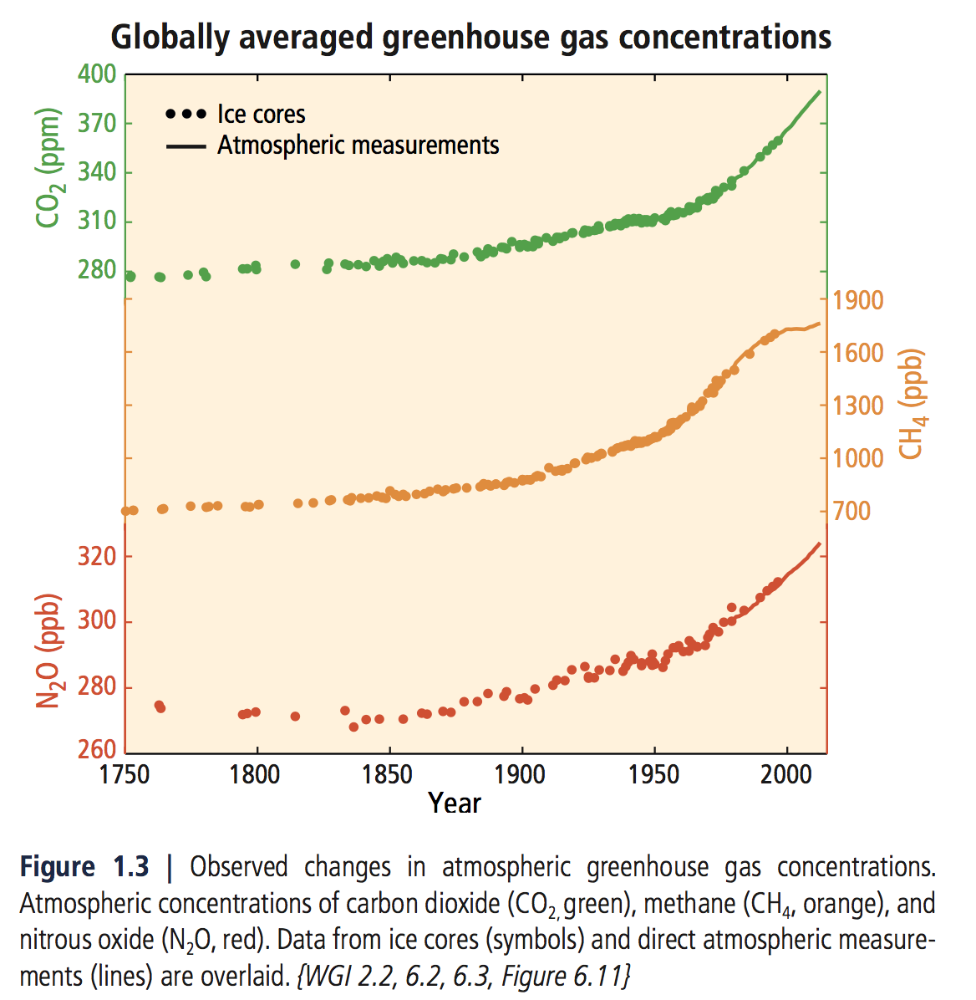

Atmospheric Temperatures
What is it?
Temperatures at the Earth's surface.
What is happening?
Each of the last three decades has been successively warmer at the Earth's surface than any preceding decade since 1850. The period from 1983 to 2012 was very likely the warmest 30-year period of the last 800 years in the Northern Hemisphere and likely the warmest 30-year period of the last 1400 years.
The globally averaged combined land and ocean surface temperature data as calculated by a linear trend show a warming of 0.85 °C over the period 1880-2012. The total increase between the average of the 1850-1900 period and the 2003-2012 period is 0.78 °C.
Caveats?
In addition to robust multi-decadal warming, the globally averaged surface temperature exhibits substantial decadal and interannual variability. As one example, the rate of warming over the past 15 years (0.05 °C per decade), which begins with a strong El Niño, is smaller than the rate calculated since 1951.
 Ocean Temperatures
What is it?
The warming of the ocean, which dominates the increase in energy stored in the climate system, accounting for more than 90% of the energy accumulated between 1971-2010. On a global scale, ocean warming is largest near the surface.
What is happening?
The upper 75m of the ocean warmed by 0.11 °C per decade between 1971-2010 and also likely warmed between the 1870s and 1971. It is likely that lower levels of the ocean warmed as well. It is likely that the ocean warmed from 700 to 2000m from 1957 to 2009 and from 3000m to the bottom for the period 1992 to 2005.
Global Glaciers, Ice, Permafrost and Snow Cover
What is it?
An ice sheet containing a substantial region that rests on a bed lying below sea level and whose perimeter is in contact with the ocean. The best known example is the West Antarctic ice sheet.
Glaciers are made up of fallen snow that, over many years, compresses into large, thickened ice masses. Glaciers form when snow remains in one location long enough to transform into ice. Presently, glaciers occupy about 10 percent of the world's total land area, with most located in polar regions like Antarctica, Greenland, and the Canadian Arctic [Source: National Snow & Ice Data Center].
Permafrost is ground (soil or rock and included ice and organic material) that remains at or below 0°C for at least two consecutive years.
What is happening?
Over the last two decades, the Greenland and Antarctic ice sheets have been losing mass. Glaciers have continued to shrink almost worldwide. Northern Hemisphere spring snow cover has continued to decrease in extent.
And it's melting faster over time. The rate of ice mass loss from the Greenland ice sheet has very likely substantially increased over the period 1992 to 2011, resulting in a larger mass loss over 2002 to 2011 than over 1992 to 2011. The rate of ice mass loss from the Antarctic ice sheet, mainly from the northern Antarctic Peninsula and the Amundsen Sea sector of West Antarctica, is also likely larger over 2002 to 2011.
There is high confidence that permafrost temperatures have increased in most regions of the Northern Hemisphere since the early 1980s, with reductions in thickness and areal extent in some regions. The increase in permafrost temperatures has occurred in response to increased surface temperature and changing snow cover.
Radiative forcing
What is it?
The change in energy flux caused by a driver and is calculated at the tropopause or at the top of the atmosphere. Natural and anthropogenic substances and processes that alter the Earth's energy budget are physical drivers of climate change. Radiative forcing quantifies the perturbation of energy into the Earth system caused by these drivers. Radiative forcings larger than zero lead to a near-surface warming, and radiative forcings smaller than zero lead to a cooling. Radiative forcing is estimated based on in-situ and remote observations, properties of GHGs and aerosols, and calculations using numerical models. The strength of drivers is quantified in units of watts per square meter (W/m2).
Aerosols (non-black carbon)
What is it?
Aerosols are minute particles suspended in the atmosphere. When these particles are sufficiently large, we notice their presence as they scatter and absorb sunlight. Aerosols interact both directly and indirectly with the Earth's radiation budget and climate. As a direct effect, the aerosols scatter sunlight directly back into space. As an indirect effect, aerosols in the lower atmosphere can modify the size of cloud particles, changing how the clouds reflect and absorb sunlight, thereby affecting the Earth's energy budget.
Three types of aerosols significantly affect the Earth's climate. The first is the volcanic aerosol layer which forms in the stratosphere after major volcanic eruptions, the second is desert dust, and the third comes from human activities (the major component comes in the form of sulfate aerosols created by the burning of coal and oil; another large fraction from smoke from burning tropical forests; Source: NASA)
What is happening?
The aerosol radiative forcing over 1750-2011 is estimated as -0.9 W/m2. Radiative forcing from aerosols has two competing components: a dominant cooling effect from most aerosols and their cloud adjustments and a partially offsetting warming contribution from black carbon absorption of solar radiation.
Effect on radiative forcing
There is high confidence that the global mean total aerosol radiative forcing has counteracted a substantial portion of radiative forcing from well-mixed greenhouse gases. Aerosols continue to contribute the largest uncertainty to the total radiative forcing estimate.
Aerosolized black carbon
What is it?
Aerosols are minute particles suspended in the atmosphere. When these particles are sufficiently large, we notice their presence as they scatter and absorb sunlight. Aerosols interact both directly and indirectly with the Earth's radiation budget and climate. As a direct effect, the aerosols scatter sunlight directly back into space. As an indirect effect, aerosols in the lower atmosphere can modify the size of cloud particles, changing how the clouds reflect and absorb sunlight, thereby affecting the Earth's energy budget.
Three types of aerosols significantly affect the Earth's climate. The first is the volcanic aerosol layer which forms in the stratosphere after major volcanic eruptions, the second is desert dust, and the third comes from human activities (the major component comes in the form of sulfate aerosols created by the burning of coal and oil; another large fraction from smoke from burning tropical forests; Source: NASA)
What is happening?
The aerosol radiative forcing over 1750-2011 is estimated as -0.9 W/m2. Radiative forcing from aerosols has two competing components: a dominant cooling effect from most aerosols and their cloud adjustments and a partially offsetting warming contribution from black carbon absorption of solar radiation.
Black carbon (BC) is a primary aerosol emitted directly at the source from incomplete combustion processes such as fossil fuel and biomass burning and therefore much atmospheric black carbon is of anthropogenic origin.
Effects on radiative forcing
There is high confidence that the global mean total aerosol radiative forcing has counteracted a substantial portion of radiative forcing from well-mixed greenhouse gases. Aerosols continue to contribute the largest uncertainty to the total radiative forcing estimate.
Solar irradiance
What is it?
Aerosols are minute particles suspended in the atmosphere. When these particles are sufficiently large, we notice their presence as they scatter and absorb sunlight. Aerosols interact both directly and indirectly with the Earth's radiation budget and climate. As a direct effect, the aerosols scatter sunlight directly back into space. As an indirect effect, aerosols in the lower atmosphere can modify the size of cloud particles, changing how the clouds reflect and absorb sunlight, thereby affecting the Earth's energy budget.
Three types of aerosols significantly affect the Earth's climate. The first is the volcanic aerosol layer which forms in the stratosphere after major volcanic eruptions, the second is desert dust, and the third comes from human activities (the major component comes in the form of sulfate aerosols created by the burning of coal and oil; another large fraction from smoke from burning tropical forests).
Solar irradiance is an effect of the 1st aerosol type: After major volcanic eruptions, the dominant aerosol layer is actually formed by sulfur dioxide gas which is converted to droplets of sulfuric acid in the stratosphere over the course of a week to several months after the eruption. Winds in the stratosphere spread the aerosols until they practically cover the globe. Once formed, these aerosols stay in the stratosphere for about two years. They reflect sunlight, reducing the amount of energy reaching the lower atmosphere and the Earth's surface, cooling them (Source: NASA).
What is happening?
Changes in solar irradiance and volcanic aerosols cause natural radiative forcing. Changes in total solar irradiance are calculated to have contributed only around 2% of the total radiative forcing in 2011, relative to 1750.
Effect on radiative forcing
The radiative forcing from stratospheric volcanic aerosols can have a large cooling effect on the climate system for some years after major volcanic eruptions.
Atmospheric greenhouse gases
What is it?
Concentrations of carbon dioxide (CO2), methane (CH4) and nitrous oxide (N2O) in the atmosphere.
What is happening?
Atmospheric concentrations of greenhouse gases are at levels that are unprecedented in at least 800,000 years. Concentrations of carbon dioxide (CO2), methane (CH4) and nitrous oxide (N2O) have all shown large increases since 1750 (40%, 150% and 20%, respectively). CO2 concentrations are increasing at the fastest observed decadal rate of change (2.0 ± 0.1 ppm/yr) for 2002-2011. After almost one decade of stable CH4 concentrations since the late 1990s, atmospheric measurements have shown renewed increases since 2007. N2O concentrations have steadily increased at a rate of 0.73 ± 0.03 ppb/yr over the last three decades.
Effect on radiative forcing
Carbon dioxide is the largest single contributor to radiative forcing over 1750–2011 and its trend since 1970.
CO2 absorbed in the ocean
What is it?
Oceanic uptake of Carbon Dioxide.
What is happening?
Since the beginning of the industrial era, oceanic uptake of CO2 has resulted in acidification of the ocean.
Effect on atmospheric greenhouse gases
The ocean has absorbed about 30% of the emitted anthropogenic CO2, causing ocean acidification.
Ocean acidity
What is it?
Ocean acidification refers to a reduction in the pH of the ocean over an extended period, typically decades or longer, which is caused primarily uptake of carbon dioxide (CO2) from the atmosphere, but can also be caused by other chemical additions or subtractions from the ocean, including from human activity.
What is happening?
Since the beginning of the industrial era, the pH of ocean surface water has decreased by 0.1, corresponding to a 26% increase in acidity, measured as hydrogen ion concentration. There is medium confidence that, in parallel to warming, oxygen concentrations have decreased in coastal waters and in the open ocean thermocline in many ocean regions since the 1960s, with a likely expansion of tropical oxygen minimum zones in recent decades.
CO2 absorbed by vegetation and soils
What is it?
Greenhouse gases, aerosols, or precursors of greenhouse gases or aerosols from the atmosphere are removed from the atmosphere by sinks, and stored in natural carbon cycle reservoirs. Sinks from ocean uptake and vegetation with soils account, in roughly equal measures, for the remainder of the cumulative CO2 emissions.
Effect on atmospheric greenhouse gases
About 40% of anthropogenic CO2 emissions have remained in the atmosphere (880 ± 35 GtCO2) since 1750. The rest was removed from the atmosphere by sinks such as soil and vegetation, and stored in natural carbon cycle reservoirs.
Anthropogenic (human-caused) greenhouse gas emissions
What is it?
Human activities affecting emissions of greenhouse gases, from activities such as forestry and other land use, fossil fuel combustion, and industrial processes.
CO2 remains the major anthropogenic greenhouse gas, accounting for 76% of total anthropogenic GHG emissions in 2010. Of the total, 16% comes from CH4, 6.2% from N2O, and 2.0% from fluorinated gases (F-gases). Annually, since 1970, about 25% of anthropogenic GHG emissions have been in the form of non-CO2 gases.
What is happening?
From 2000 to 2010 emissions were the highest in history. Historical emissions have driven atmospheric concentrations of carbon dioxide, methane and nitrous oxide to levels that are unprecedented in at least the last 800,000 years, leading to an uptake of energy by the climate system.
About half of the cumulative anthropogenic CO2 emissions between 1750 and 2011 have occurred in the last 40 years. Since 1970, cumulative CO2 emissions from fossil fuel combustion, cement production and flaring have tripled, and cumulative CO2 emissions from forestry and other land use (FOLU) have increased by about 40%.
Total annual anthropogenic GHG emissions have continued to increase over 1970 to 2010 with larger absolute increases between 2000 and 2010. Despite a growing number of climate change mitigation policies, annual greenhouse gas emissions grew on average by 1.0 GtCO2-eq (2.2%) per year, from 2000 to 2010, compared to 0.4 GtCO2-eq (1.3%) per year, from 1970 to 2000.
Total anthropogenic greenhouse emissions from 2000 to 2010 were the highest in human history and reached 49 (± 4.5) GtCO2-eq/yr in 2010. The global economic crisis of 2007/2008 reduced emissions only temporarily.
Effect on atmospheric greenhouse gases
About 40% of anthropogenic CO2 emissions have remained in the atmosphere (880 ± 35 GtCO2) since 1750. The rest was removed from the atmosphere by sinks, and stored in natural carbon cycle reservoirs.
Effect on radiative forcing
The total anthropogenic radiative forcing over 1750-2011 is calculated to be a warming effect of 2.3 W/m2, and it has increased more rapidly since 1970 than during prior decades. Carbon dioxide is the largest single contributor to radiative forcing over 1750-2011 and its trend since 1970.

Fossil fuel combusion and industrial processes
What is it?
The burning of fossil fuels, including coal, oil and natural gas, for energy. Fossil fuels are currently the world's primary energy source (Source: EEESI). Major emissions source categories from industrial processes include cement production, lime production, iron and steel industry, emissions from electrical equipment, and others.
Effect on anthropogenic greenhouse gas emissions
Since 1970, cumulative CO2 emissions from fossil fuel combustion, cement production and flaring have tripled.
CO2 emissions from fossil fuel combustion and industrial processes contributed about 78% to the total GHG emission increase between 1970 and 2010, with a contribution of similar percentage over the 2000-2010 period. Fossil-fuel-related CO2 emissions reached 32 (±2.7) GtCO2/yr, in 2010, and grew further by about 3% between 2010 and 2011, and by about 1 to 2% between 2011 and 2012.
Forestry and other land use (FOLU)
What is it?
Forestry and other land use (FOLU)—also referred to as LULUCF (land use, land use change and forestry)—is the subset of agriculture, forestry and other land use emissions and removals of GHGs related to direct human-induced LULUCF activities, excluding agricultural emissions and removals.
Land use refers to the total of arrangements, activities and inputs undertaken in a certain land cover type (a set of human actions). The term land use is also used in the sense of the social and economic purposes for which land is managed (e.g., grazing, timber extraction and conservation). In urban settlements it is related to land uses within cities and their hinterlands. Urban land use has implications on city management, structure and form and thus on energy demand, greenhouse gas (GHG) emissions and mobility, among other aspects.
Effect on anthropogenic greenhouse gas emissions
Since 1970, cumulative CO2 emissions from forestry and other land use (FOLU) have increased by about 40%.
Population and economy size
What is it?
The growth of the population size and the increased emissions from sectors in the economy like the energy and industry sectors.
Effect on anthropogenic greenhouse gas emissions
Anthropogenic greenhouse gas emissions have increased since the pre-industrial era driven largely by economic and population growth. The contribution of population growth between 2000 and 2010 remained roughly identical to that of the previous three decades, while the contribution of economic growth has risen sharply.
Between 2000 and 2010, both drivers outpaced emission reductions from improvements in energy intensity of gross domestic product (GDP). Increased use of coal relative to other energy sources has reversed the long-standing trend in gradual decarbonization (i.e., reducing the carbon intensity of energy) of the world’s energy supply.
Total annual anthropogenic greenhouse gas emissions have increased by about 10 GtCO2-eq between 2000 and 2010. This increase directly came from the energy (47%), industry (30%), transport (11%) and building (3%) sectors. Accounting for indirect emissions raises the contributions by the building and industry sectors. Since 2000, greenhouse gas emissions have been growing in all sectors, except in agriculture, forestry and other land use.
In 2010, 35% of greenhouse emissions were released by the energy sector, 24% (net emissions) from AFOLU, 21% by industry, 14% by transport and 6.4% by the building sector. When emissions from electricity and heat production are attributed to the sectors that use the final energy (i.e., indirect emissions), the shares of the industry and building sectors in global GHG emissions are increased to 31% and 19%, respectively.
Oceanic evaporation and precipitation
What is it?
The amount of evaporation and precipitation over the ocean.
What is happening?
It is very likely that regions of high surface salinity, where evaporation dominates, have become more saline, while regions of low salinity, where precipitation dominates, have become fresher since the 1950s. These regional trends in ocean salinity provide indirect evidence for changes in evaporation and precipitation over the oceans and thus for changes in the global water cycle.
Sea level
What is it?
The annual rate of sea-level rise, as measured by core samples, tide gauge readings, and satellite measurements (Source: National Geographic).
What is happening?
Over the period 1901-2010, global mean sea level rose by 0.19 m. The rate of sea level rise since the mid-19th century has been larger than the mean rate during the previous two millennia.
Glaciers have lost mass and contributed to sea level rise throughout the 20th century. Since the early 1970s, glacier mass loss and ocean thermal expansion from warming together explain about 75% of the observed global mean sea level rise (high confidence). Over the period 1993-2010, global mean sea level rise is, with high confidence, consistent with the sum of the observed contributions from ocean thermal expansion, due to warming, from changes in glaciers, the Greenland ice sheet, the Antarctic ice sheet and land water storage.